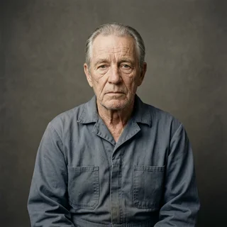
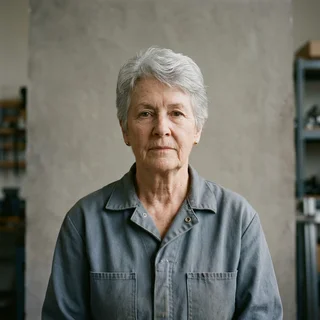
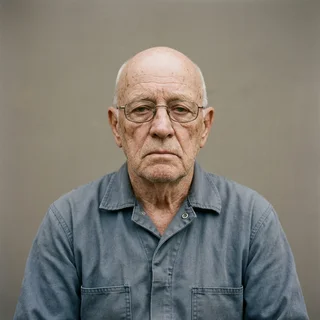

Contact Window Optimization
Our guidance computer models when your daughter is statistically most likely to answer and opens a 90-second window. Burn it or hold for the next one, currently 47 days out.
Perigee runs each retiree as a crewed mission. Flight plan, live telemetry, a certified flight director, and a berth aboard a companionship habitat at 420 km for the ones cleared to stay up there.
Three flight systems, none of which addresses the actual problem, each certified anyway.
Our guidance computer models when your daughter is statistically most likely to answer and opens a 90-second window. Burn it or hold for the next one, currently 47 days out.
Before any call home, your assigned flight director reads a 22-item pre-call checklist and polls the room. A single NO-GO and the call is scrubbed. This is a safety feature.
Retirees cleared for Trans-Colony Injection relocate to a pressurized module at 420 km with 39 age-matched crewmates and no scheduled de-orbit. Loneliness, solved by relocation.
“My flight director scrubbed three of my calls to my son. He says the telemetry on the fourth one looks strong.”

“I have not been this close to other people since basic. We are 420 kilometers up and I cannot get away from a single one of them.”

“They told me the loneliness was a fuel problem. Fourteen launches later I have come to feel that was not the problem.”

Every class ends with the same physics. The difference is how far up you are when it does.